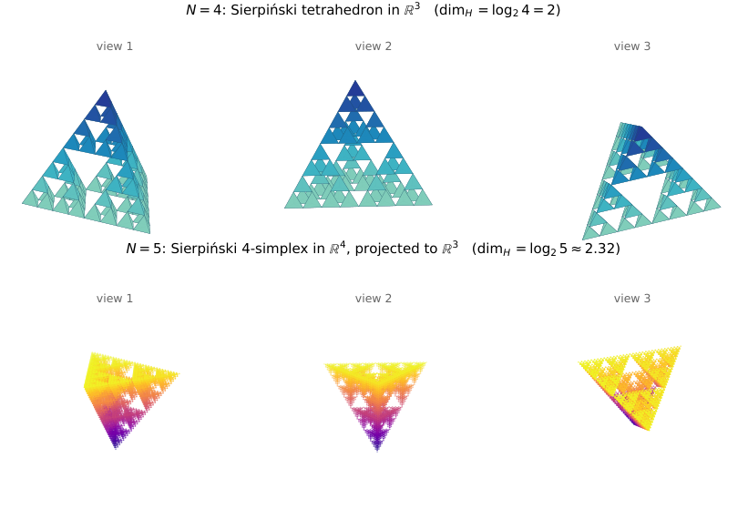

Lean 4/Mathlib mechanization (49 modules, 19.7k lines) machine-checks 853 statements about HSFN addressing, routing, consensus, and reconfiguration results.
Abstract
Large-scale, delay-tolerant peer-to-peer networks that need strong consistency usually separate naming, routing, consensus, and ordering into independent layers. To bring deterministic network properties into complex peer-to-peer structures, we unify all four on a single recursive topology. Modeling mutual equality among N peers in Euclidean space requires dimension at least N-1, which prevents flat equal groups from scaling at fixed dimension. The hyper-simplex fractal network G(N,m) escapes this limit by recursion. Each non-leaf node anchors a half-scale N-clique. From the resulting digit-word addresses alone, nodes decide adjacency without routing tables, forward greedily along exact shortest paths, and converge geometrically to a self-similar attractor of dimension log_2 N. Running hierarchical PBFT on the same prefix tree achieves linear message load and logarithmic fault-free latency, with an explicit reliability threshold under independent faults and analytical recursions for anchor exposure, dual homing, and event registration. Reversible topology edits generate the Higman-Thompson group V_N on the address boundary, block order characterizes service-topology hosting beyond treewidth, and root-anchored block heights yield persistent spacetime coordinates with compact light-client proofs.
Problem
Large delay-tolerant peer-to-peer networks with strong consistency usually handle naming, routing, consensus, and ordering in separate layers. Flat equal peer groups cannot scale at fixed dimension, because N mutually equidistant peers need Euclidean dimension at least N-1.
Approach
The hyper-simplex fractal network G(N,m) grows recursively: each non-leaf node anchors a half-scale N-clique, and nodes are addressed by digit words. From addresses alone, the authors derive table-free adjacency, greedy shortest-path routing, hierarchical PBFT committees, reliability recursions, reversible reconfiguration edits generating the Higman-Thompson group V_N, and spacetime coordinates from block heights. Results are checked by exhaustive enumeration, fault sampling, a protocol simulator, and Lean 4/Mathlib proofs.
Results
Greedy routing is exact, with diameter 2m-1 and degree at most 2N. Hierarchical PBFT has linear message load and logarithmic fault-free latency, with an explicit reliability threshold, and the self-similar attractor has dimension log_2 N. The Lean development machine-checks 853 statements with no sorry and only the standard axioms.

Fig. 18: The limit set \mathcal{S}\Delta_{N} from three viewpoints, N=4 in \mathbb{R}^{3} (top) and N=5 in \mathbb{R}^{4} orthogonally projected to \mathbb{R}^{3} (bottom). Orthogonal projection commutes with corner similitudes.
N (f)
Deg. (phys./dual)
Overlay f_N
Phys. g_N
Dual h_N
5 (1)
10 / 16
0.150
0.115
0.150
8 (2)
16 / 25
0.177
0.127
0.173
16 (5)
32 / 49
0.269
0.206
0.258
Reliability thresholds by cell size (overlay, physical, dual-homed recursions)